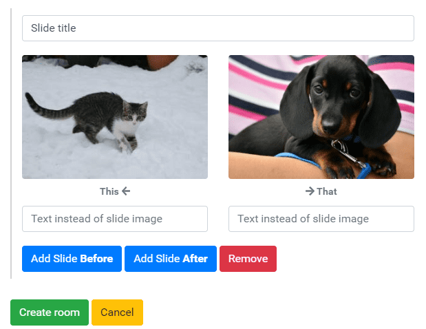
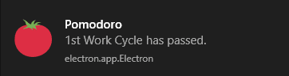

Learning ElectronJS
Uploaded on 10th July, 2020. Read time: 8m
Developing with ElectronJs to me isn't much different from making a web application, but that probably had to do with my currently basic understanding of it. Looking at some project ideas to tackle, I decided to make something with Electron since many popular platforms are developed with it and I became really curious. I made two easy applications, one called Pomodoro, which I now actively use, and another called this-or-that, inspired from the North American LCS show.

This or that uses a MongoDB instance, as it is a bit more complicated and has to store sessions for different users, so that they can join or not depending on if there is a password for that room. The password string uses a SHA512 algorithm to be encrypted.
{
// This is a room instance in MongoDB
"name": "Cats or dogs?",
"password": "ee26b0dd4af7e749aa1a8ee3c10ae9923f6...",
"slides": [{
"title": "Slide title",
"thisImg": "http://placekitten.com/300/200",
"thisText": "",
"thatImg": "http://placedog.net/300/200",
"thatText": "",
"html": ""
}

With Electron, it was easy to use the library and create a functional, cross-platform prototype. The two main parts about creating an Electron application is using the life-cycle callbacks and assigning scripts to individual browser windows. If other modules are necessary for your application, you enable them separately or include them in your scripts:
function createWindow() {
mainWindow = new BrowserWindow({
width: 450,
height: 450,
useContentSize: true,
icon: './favicon/favicon-32x32.png',
webPreferences: {
nodeIntegration: true
},
});
setupWindow();
// this is the markup file which will be rendered
// on this browser window.
mainWindow.loadFile('./index.html');
}
// here I configure how the browser window will be
// displayed after instantiated
function setupWindow() {
mainWindow.resizable = false;
mainWindow.autoHideMenuBar = true;
mainWindow.setMenuBarVisibility(false);
mainWindow.center();
}
For a Pomodoro clock application, I mostly worked with the tray and notification modules, since it's basically a glorified countdown. Electron gives you convenient access to create notifications and a tray icon with hover functionality, although the tray icon does not work perfectly in Linux and for me could not run without crashing.
// Creating tray instance and setting the app icon
tray = new Tray('./favicon/favicon-32x32.png');
...
const trayMessage = `${currentCycle.title} - ${isTimerPaused ? 'Paused' : 'Active'} \n${timer.innerText}`;
// This message will then be displayed once you
// hover over the tray icon
ipc.send('updateTrayTimer', trayMessage);
// And this is how you send a notification
// to the operating system
new Notification('Pomodoro', {
body: currentCycle.title + ' has passed.',
icon: 'images/tomato.png'
});

The application simply loops between pre-defined cycles of work and breaks. Once a cycle completed, the user is notified and the next one begins and so on until the last cycle finishes the session.
const classicCycles = [
new Cycle('1st Work Cycle', '<b><u>1st</u></b> Work Cycle', 0),
new Cycle('Break - 1st Work Cycle', '<b><u>Break</u></b> - 1st Work Cycle', 5),
new Cycle('2nd Work Cycle', '<b><u>2nd</u></b> Work Cycle', 25),
new Cycle('Break - 2nd Work Cycle', '<b><u>Break</u></b> - 2nd Work Cycle', 5),
new Cycle('3rd Work Cycle', '<b><u>3rd</u></b> Work Cycle', 25),
new Cycle('Break - 3rd Work Cycle', '<b><u>Break</u></b> - 3rd Work Cycle', 5),
new Cycle('4th Work Cycle', '<b><u>4th</u></b> Work Cycle', 25),
new Cycle('Long Break', 'Long Break', 30),
];
const deepFocusCycles = [
new Cycle('1st Work Cycle', '<b><u>1st</u></b> Work Cycle', 90),
new Cycle('Long Break', 'Long Break', 30),
];